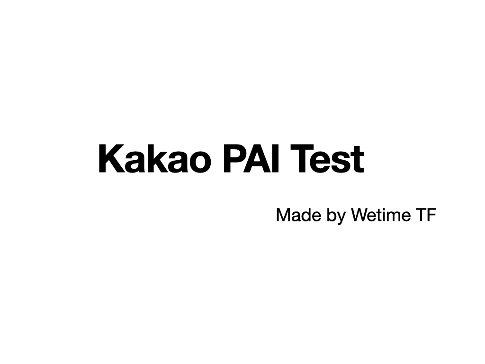

아직 제목은 미정입니다.

내용도 미정입니다.
재미있는 내용으로 고민해보시죠.
Test Start
문항이 노출되는 영역입니다.
문항의 갯수는 최대 15가지로 생각하고 있습니다.
문항들을 말랑 말랑한 느낌으로 바꾸어보시죠.
Yes
No
나는야 합리적인 마크 저커버그
목적 달성에 방해되는 건 거들떠도 안봄,
일 잘하는 것? 어렵지 않아요!,
내 문제는 내가 알아서 해결해